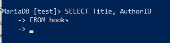
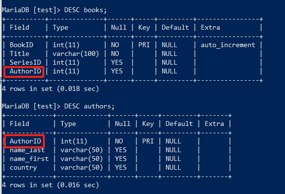

SELECT进阶¶
在此章节开始前，请确保你已学习过 快速入门 中的内容。 在 快速入门 中，我们使用了非常基础的 SELECT 语法去MariaDB中查询数据， 但随着数据表结构和数据量的变化，最基础的 SELECT 语法显然是无法满足需要的。因此从本节开始，我们将会探索 SELECT 语法中更高级的用法。
基础要素¶
上一章，我们使用 SELECT * FROM books; 查询books表中的数据， * 表示选中所有字段进行查询，但是如果只想查询某一个或某几个字段呢？
此时只需要把 * 号，替换为需要查询的字段名（column）即可，多字段需要用 , 号隔开，请尝试运行以下的语句：
SELECT Title, AuthorID
FROM books;
请观察上面的执行结果，与 SELECT * FROM books; 的执行结果有何区别？二者句式有何区别？
发现了吗？上面的 SELECT 只输出了我们指定的字段数据，其它字段并没有输出，而且一个完整的 SELECT 分成了两行。
提示
在SQL语法中，一个SQL语句可以分成很多行，一些较为复杂的查询条件，SELECT语句会特别长。此时 为了方便观察，可以把它分割成很多行。无论怎么分割，它还是一个整体，最终要以 ; 号结尾， 不然命令行还在等待输入，在你按下回车键之前，SQL语句并不会执行。
SQL语法中还有两个特殊字符， \G 和 \c。
\G 会将输出结果以行（row）为单位进行输出，请尝试执行
SELECT Title FROM books\G，再执行SELECT Title FROM books;。\c 则会终止SQL语句的执行，以此为结尾的SQL语句在按下回车键后并不会执行，请尝试执行
SELECT Title FROM\c。
试想一下，一个数据库使用了很长时间，里面已经存储了大量数据，一张表就就成千上万行的数据。但如果我只想看其中的一点点数据呢？此时可以使用 LIMIT 进行限制：
SELECT * FROM books LIMIT 2
这里使用LIMIT限制SELECT的输出，虽然books表里有4条数据，但此时它的查询结果只会输出整张表的前两条数据。那如果我想知道第一行之后的两行数据，该怎么办？ 可以使用如下的 LIMIT 条件来达成。
SELECT * FROM books LIMIT 1, 2;
1表示第一行，2表示第一行之后的两行数据，对比 SELECT * FROM books; 的结果，看看是不是这样的呢？
重要
不知你是否注意到，截止到止前为止，教程中执行的所有SQL语句，所有的数据库命令相关单词都使用的大写，而表结构、表内数据等则没有特地使用大写？如 SELECT * FROM books LIMIT 5;。
这是因为在编写SQL时，大家习惯上都使用大写，虽然这不是一个强制要求，也不会影响数据库的SQL执行，但这已然成为了一个行业惯例。而在为数据库和表命名时，都使用小写。字段名（column）表结构则使用如 驼峰命名法 的方法等。
这样就通过大写区分数据库命令，小写区分数据库名、表名，驼峰命名法等区分表结构字段名。
选择与排序¶
上一节的 SELECT 的查询，无法精确的查找某一条数据，比如 SeriesID 是某个具体值的？这一点在上一章 删除表中的数据 中涉及过，不过此时可以和 LIMIT 结合，更精细的在数据中查找数据：
SELECT * FROM books WHERE SeriesID = 1 LIMIT 2;

WHERE 指定了查询条件，同时 LIMIT 限制了输出几条结果，如果想要对结果以字母数字的顺序进行排序呢？这时就需要使用 ORDER BY 从句了。
SELECT * FROM books WHERE SeriesID = 1 ORDER BY Title ASC LIMIT 2;
此时， SELECT 语句到了一定量级了，有 WHERE、 ORDER BY、 LIMIT 三个条件，但它们的顺序不能乱，否则数据库会报语法（syntax）错误。
当 SELECT 语句执行时，MariaDB以 WHERE 为条件输出所有相关数据，然后以 ORDER BY 为条件对输出的数据进行排序，最后 LIMIT 为条件对结果进行限制输出，因此这三者的前后顺序不能乱，这也是这三个条件这样排序的原因。
提示
不知你是否注意到 ASC 这个flag，它在告诉数据库服务对输出结果进行正序排序，并且ASC是默认的，此处实际上无须带上 ASC 这个flag，不过如果我想倒序输出呢？你可以尝试将上面语句中的 ASC 改成 DESC ，再观察一下输出结果有什么不同。
上面的例子只是对其中一个字段进行了排序，那如果我想要对多个字段进行排序呢？这也是可以办到的，现在先运行下面的SQL为books这张表再添加几条数据，以便下面的实验结果更加明显。（目前无需理解 INSERT 语法，只专注于 SELECT 即可）。
INSERT INTO books (BookID,Title,SeriesID,AuthorID) VALUES
(4, 'The Trial', 2, 2),
(5, 'The Metamorphosis', 2, 2),
(6,'America',2,3),
(8,'The Castle',2,3);
请使用 SELECT 观察一下最新的books表的最新数据，在新加的数据中，AuthorID相同，Title不同，我们就来通过这两个字段再进行排序，请运行以下SQL并观察它们的结果有何不同：
SELECT * FROM books WHERE SeriesID = 2 ORDER BY AuthorID DESC, Title DESC;
SELECT * FROM books WHERE SeriesID = 2 ORDER BY AuthorID DESC, Title ASC;
提示
ORDER BY 之后可以加多个字段名（column name），每个字段可以分别使用ASC或DESC的flag标记排序方法，然后以 , 隔开，就可以做到多字段进行排序，某些情况下这是非常有用的一种技巧。
多表查询¶
目前为止，我们所有的查询都只停留在一张表上，但数据库中不止一张表，而且多张表互相之前还会产生关联，这就意味着，如果想要获取一份完整的数据，需要从多张表中同时查询。 例如books中只有书名，作者在另一张authors的表中，books表中只能查到AuthorID，那如果想同时知道书名和作者名，需要同时查询books和authors并将它们关联起来才行。
先来为authors表中添加点数据，请先运行以下SQL（同样无须理解以下语法，只关注于 SELECT 即可）：
ALTER TABLE authors
ADD
(name_last VARCHAR(50),
name_first VARCHAR(50),
country VARCHAR(50));
alter table authors
change
id AuthorID int(11);
INSERT INTO authors
(name_last,name_first,country)
VALUES
('Kafka','Frans','US'),
('Nicholas','Sparks','NL'),
('Stephen','Kingrks','AU'),
('ChengEn','Wu','CN'),
('NaiAn','Shi','CN');
多表查询需要使用 JOIN 从句关键字，比如我们现在要查询books中的书的作者是谁，可以运行以下SQL同时对books和authors进行关联查询：
SELECT Title,
CONCAT(name_first,' ',name_last) AS author
FROM books
JOIN authors USING (AuthorID)
WHERE name_first = 'Frans'
ORDER BY Title DESC
LIMIT 2;
此时，SELECT 语句又上升了一个量级，多表查询使得它看起来越发笨重，比起最初的 SELECT * FROM books; ，已然天差地别了。如果你已经跟着教程一步一步学习并理解，这个多表查询也就不足为虑。
多表查询实质上就是增加了 JOIN 这一语法从句，它是两个表关联的关键之处。要理解它俩是如何关联的，要先看它俩的表结构：
可以观察到两张表都有相同的 AuthorID 这个字段名，这就是它们的关联之处。而 JOIN 从句中的 USING 就是在表明这两个表要通过 AuthorID 关联起来。然而在实际生产环境中，有很多相关联的表格，关联字段名却不一样的情况，这时候关键字 USING 就无法适用了，需要改用以下句式：
备注
先把authors的字段名AuthorID改回id，模拟真实的生产环境状况：
ALTER TABLE authors CHANGE AuthorID id int(11);
此时，再使用 USING 将会报错，无法进行关联查询。
SELECT Title,
CONCAT(name_first,' ',name_last) AS author
FROM books
JOIN authors on AuthorID = id
WHERE name_first = 'Frans'
ORDER BY Title DESC
LIMIT 2;
将 JOIN 处的关联条件重新更改后，在关联字段名不一致的情况，还是做到了关联查询的效果，更多 JOIN 的用法，请参见 官方文档。
此外，你也应该注意到上方SQL中的 CONCAT ，和查询结果中的 author ，但在authors表中的字段名却是 name_first 和 name_last 。 CONCAT 是数据库中的字符串函数（string function），它将两个字段 name_first 、 name_last 和空白字符 ' ' 连接在一起，让查询结果看起来更美观。
警告
在SQL中，字段名不需要用单引号 ' 引起来，但给予的查询参数要用 ' 引起来，不然SQL执行时会报错。如上方的 name_first 没有用单引号引起来，但是查询参数 Frans 却引起来了。
提示
你应该注意到，从本小节开始，一大段的SQL语句不再是一行，而是分割成了多行，这更有助于我们的书写和排查语法错误等好处。
此外，SQL中还支持匹配查询，比如 Frans 并不清楚全名或者查找以 Fra 开头的值，那可使用 LIKE 进行匹配查询：
SELECT Title,
CONCAT(name_first,' ',name_last) AS author
FROM books
JOIN authors on AuthorID = id
WHERE name_first LIKE 'Fra%'
ORDER BY Title DESC
LIMIT 2;
以上是两张表联合查询，那要是三张表，或是更多表怎么办？先运行以下sql，为第三张表series填充数据：
ALTER TABLE
series
ADD
(isbn CHAR(20), yearPub CHAR(4));
INSERT INTO
series (isbn,yearPub)
VALUES
(23592835,2021),(23453263,2020),(64323458,2022);
UPDATE books
SET SeriesID=3
WHERE BookID=7;
在填充完第三表的数据后，开始联合三张表进行查询：
SELECT Title,isbn,
CONCAT(name_first,' ',name_last) AS author
FROM books
JOIN (authors,series)
ON
(books.SeriesID=series.id AND books.AuthorID=authors.id)
WHERE name_first LIKE 'Fran%'
ORDER BY Title DESC
LIMIT 2;
观察 JOIN 相对于上面两张表联合查询时的写法，多张表联合查询时要将多个表放到括号内以 , 号隔开， 并在 ON 处用括号将这些表与 FROM 处的表描述好关联关系，用 AND 相连即可。
多多练习 SELECT 的联合查询，即便再长的 SELECT 查询语句也不足为虑。
其它有用的flag¶
数据去重¶
在某些情况下，我们会查出一些重复的数据，比如：
SELECT SeriesID,
CONCAT(name_first,' ',name_last) AS author
FROM books
JOIN authors on AuthorID = id
WHERE name_first LIKE 'Fra%'
ORDER BY Title DESC;
如果不想看到这些重复的数据，那就可以使用 DISTINCT 去重，对比以下SQL的查询结果：
SELECT DISTINCT SeriesID,
CONCAT(name_first,' ',name_last) AS author
FROM books
JOIN authors on AuthorID = id
WHERE name_first LIKE 'Fra%'
ORDER BY Title DESC;
SELECT优先执行¶
在一台繁忙的数据库服务中，SELECT查询操作可能在与修改、更新等操作同步进行，此时，修改和更新会优先于SELECT执行，那如果想要提高SELECT的执行级，可以使用 HIGH_PRIORITY 来要求服务器优先响应SELECT的查询：
SELECT DISTINCT HIGH_PRIORITY SeriesID,
CONCAT(name_first,' ',name_last) AS author
FROM books
JOIN authors on AuthorID = id
WHERE name_first LIKE 'Fra%'
ORDER BY Title DESC;
计算SELECT查询到的行（rows）数¶
在SELECT执行完毕后，系统会临时记录查到到的行数，如：
SELECT SeriesID,
CONCAT(name_first,' ',name_last) AS author
FROM books
JOIN authors on AuthorID = id
WHERE name_first LIKE 'Fra%'
ORDER BY Title DESC
LIMIT 2;
SELECT FOUND_ROWS();
而 SQL_CALC_FOUND_ROWS 则会忽略 LIMIT 强制计算找到的行数，如：
SELECT SQL_CALC_FOUND_ROWS SeriesID,
CONCAT(name_first,' ',name_last) AS author
FROM books
JOIN authors on AuthorID = id
WHERE name_first LIKE 'Fra%'
ORDER BY Title DESC
LIMIT 2;
SELECT FOUND_ROWS();
FOUND_ROWS()记录的值是临时的，只对现在登录的数据库窗口有效，在退出后就消失；多窗口登录的情况下，另一个窗口并不可见，每个窗口即一个连接会话（session）。